今天的三条线索，分别来自工厂、口袋与深空。芯片这一端，2纳米工艺第一次走上手机，而数据中心被整个「立」了起来——供冷、算力、供电从平铺改为垂直叠加，用结构换空间，硬件不再只靠缩小尺寸取胜。口袋里发生的变化同样直接：手机开始被定义为「智能体」，能跨应用替你把一件完整的事做完，语音助手也第一次具备了跨应用行动力。而在银道面深处，一台射电望远镜找到了一对绕着彼此飞驰的中子星，总质量轻到几乎触到理论底线，轨道短到只有2.36小时。三条线看似无关，却都在回答同一个问题：当原有尺度用尽，能力该从哪里来。
把今天这二十条放在一起看，第一个信号是硬件正在换维度。制程逼近2纳米之后，能效的边际收益越来越薄，于是竞争重心从「谁的线更细」转向「谁的结构更聪明」：移动芯片把算力按场景重新分配，用双NPU与CPU、GPU协同去换取端侧大模型的可用性；数据中心则干脆把机房立起来，让供冷、算力、供电四层垂直叠加，把最慢的土地与管线环节提前到工厂预制，交付周期从半年压到三个月。再加上英伟达把容错量子算法的开发周期从五个月缩到三周，这三件事的共同点是：当单一维度的进步放缓，工程智慧就会转向组织方式的重新设计。
第二个信号是人工智能从「对话」转向「代理」。谷歌发布Gemini 3.8 Live，把低延迟实时交互与扩展思考拆成两款产品同步上线；苹果推送iOS 27，让语音助手第一次能够跨应用执行任务；努比亚与豆包联合推出的机型被定义为「AI智能体手机」，海外预约量已经超过36万台。这三条消息指向同一个判断：评价模型的标准，正在从「回答得像不像人」变成「事情办没办成」。与此同时，行业内罕见地出现了「慢一点」的呼声——头部实验室负责人先后表态迭代过快需要审慎，盖茨基金会则宣布未来两年投入至少10亿美元推动人工智能普惠，重点覆盖教育、医疗与农业，并警惕资源过度集中会扩大数字鸿沟。能力扩张与边界治理，第一次以这样近的距离同时出现。
第三个信号来自科学对旧证据的重新读取。FAST在银道面上找到一对中子星，总质量仅2.488倍太阳质量，刷新了已知质量下限；地质团队用同位素「指纹」把散落在年轻造山带深部的古老碎块拼回去，让冈瓦纳面积跃升至大陆地壳的80%，正式跨过超大陆门槛；一项对318份加勒比样本的系统评估，则给出了古DNA在这片湿热土地上约五千年的实用上限，并确认内耳岩骨是最可靠的取样部位。三项研究分属天体、地质与考古，方法却一致：不去制造新证据，而是把已有材料重新组织、重新提问。
三条线索最终交汇成一句判断：当显性资源接近天花板，真正的增量藏在结构、边界与重新读取里。
01
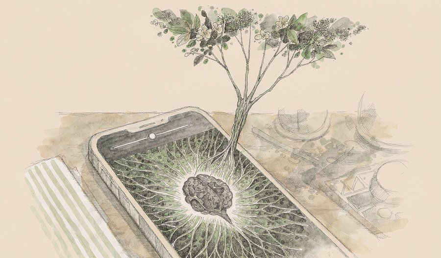
联发科发布新一代旗舰移动平台，采用2纳米制程与2+3+3全大核设计，并首次引入所谓「AI原生」的融合计算架构，把双NPU单元与CPU、GPU的协同方式重新梳理，据称可在端侧运行参数量最高达300亿的混合专家模型，同时支持新一代内存标准，首批机型已临近上市。
观此：制程走到2纳米，能效提升的空间已被压得很薄，于是竞争的焦点转向架构——按场景重新分配算力，而不是一味堆核心。300亿参数能在手机上跑起来，意味着过去必须联网完成的任务，开始具备离线交付的可能。这对隐私与响应速度都是实质改变，也让「端侧优先」从口号变成可选的工程路径。
来源：搜狐
02
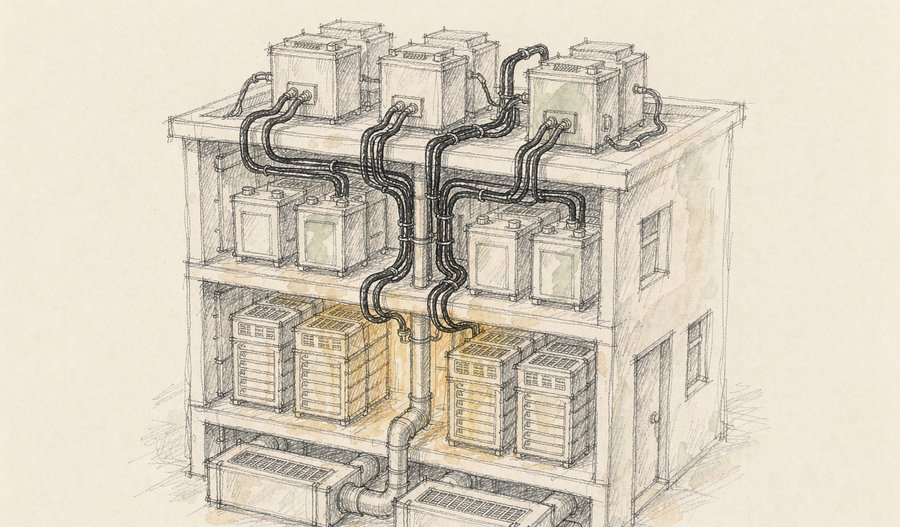
华为发布被称为全球首个的3D数据中心架构，把过去水平铺开的机房改为垂直分层：供冷层、IT设备层、供电层、备电层自下而上叠加，电池独立置于屋顶。该架构机电系统预制率超过九成，机电交付周期由约六个月压缩到三个月，已在安徽芜湖落地并部署昇腾系列算力集群。
观此：数据中心的瓶颈往往不在芯片，而在散热、供电与建设周期。把平面改为立体，本质上是把「土地与管线」这两个最慢的变量提前搬进工厂预制。当算力需求以集群为单位膨胀，能否快速交付一栋楼，可能比单卡性能更能决定一座算力枢纽的成败。
来源：SegmentFault
03
苹果向全球用户推送 iOS 27，全新的语音助手同步上线，支持跨应用任务执行与上下文理解，被视为今年规模最大的一次系统级更新。与此前只能回答问题的形态不同，这一版本的助手可以调用其他应用完成连续操作。
观此：语音助手的价值分水岭，不在于听懂多少句话，而在于能不能把一句话变成一串动作。跨应用执行落地的同时，权限与边界问题也被推到台前——助手看得越多、动得越多，用户对「它替我做了什么」的可追溯要求就越高。这条路径真正的考验，不在能力演示，而在出错时能否被解释与撤回。
来源：微博
04
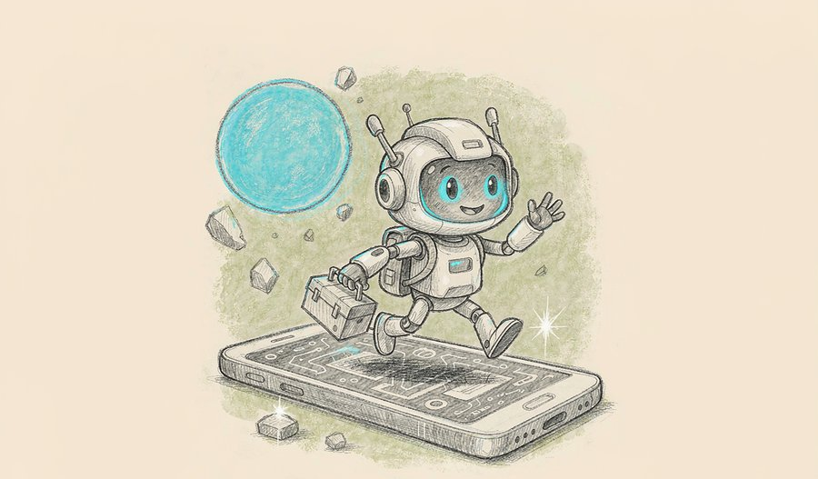
由努比亚与字节跳动联合打造的机型正式发布并开售，被业内称为全球首款AI智能体手机，搭载面向消费者的助手版本，截至开售前在电商平台的预约量已突破36万台。值得注意的是，它放弃了早期工程机模拟点击界面的做法，改为通过模型上下文协议与智能体间协议协同，仅在应用主动开放权限时接入。
观此：从「模拟点击」退回到「协议接入」，看似能力收缩，实则是把不可控的越权操作换成了可协商的边界声明。这条路更慢、更需要生态配合，但它是智能体走向消费者时几乎绕不开的一步。真正的胜负手不在发布日，而在有多少应用愿意为它开放接口。
来源：SegmentFault
05
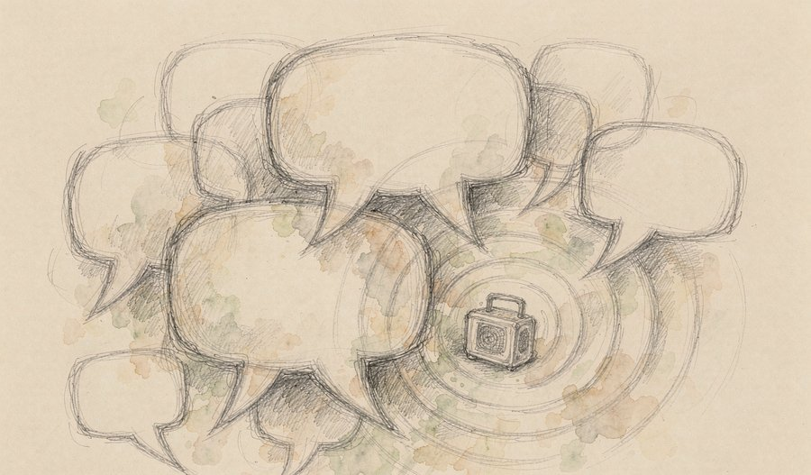
谷歌发布新一代实时对话模型，同时推出标准版与扩展思考版，官方将两者定位为当前最出色的对话式人工智能。两个版本分别面向低延迟实时交互与深度推理两类场景，并同步宣布与多家企业建立合作，把模型能力嵌入客户关系管理、搜索与保险等真实业务链路。
观此：同一基座、不同推理预算，覆盖高频轻量交互与复杂任务处理两类需求——这说明产品分层的主要手段已经从「换更小的模型」变成「换更多的思考时间」。对企业侧用户而言，真正需要判断的是哪类任务值得付出更长的等待。模型能力的差距在缩小，编排与成本控制正在成为新的分水岭。
来源：腾讯新闻
06
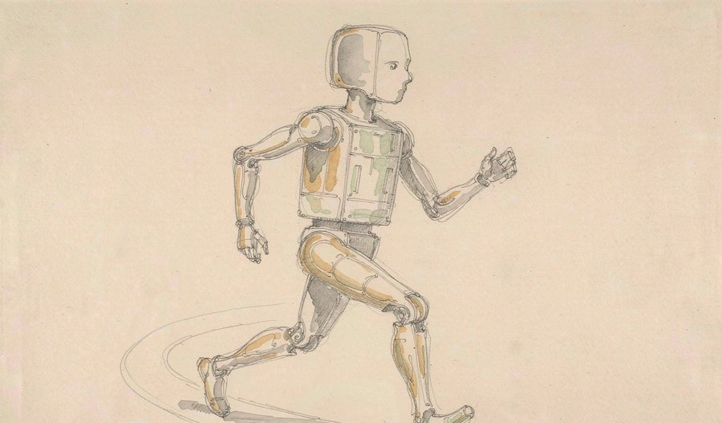
宇树科技发布人形机器人新品，围绕运动、感知与智能三个维度做了六项升级，其中电机峰值扭矩据称提升约110%，标准版定价9.5万元。此前小米创始人到访该公司并观看机器人表演，引发行业对量产节奏的关注。
观此：扭矩这个参数看起来枯燥，却直接决定了机器人能搬多重、能不能稳住重心——它是从「表演」跨向「干活」的硬门槛。9.5万元的定价区间，也让这类产品首次进入中小型场景的核算范围。当运动能力不再是瓶颈，接下来限制落地的就只剩场景定义与维护成本。
来源：网易
07
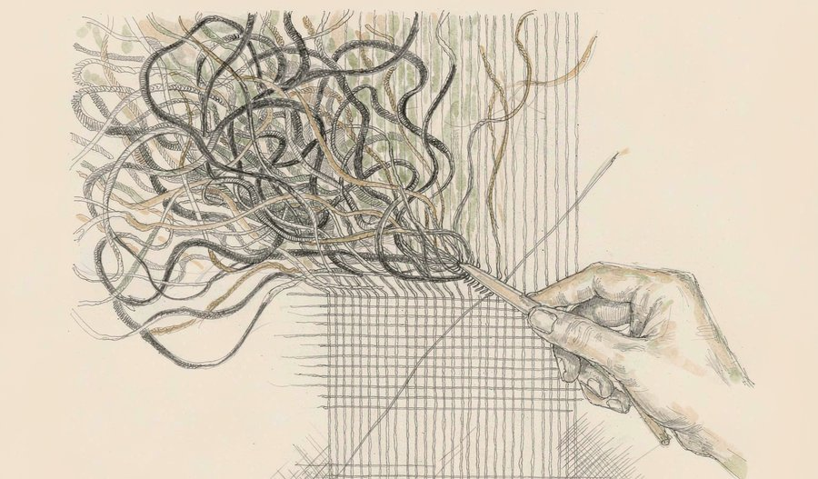
英伟达扩展其开源量子计算平台，推出新的逻辑层协调工具，为科研人员提供可编程、可验证的架构，用于设计与测试容错量子应用。据其介绍，这套工具可把容错算法开发周期从约五个月缩短至三周左右。
观此：量子计算的真正难点，长期不在造出更多量子比特，而在于比特太容易出错、纠错程序又太难写。把开发工具做得可用，等于先替整个领域搬走一段路障。工具链成熟的速度，往往决定一门技术从实验原型走向实用化要花多久——这一步看似不酷，却很关键。
来源：SegmentFault
08
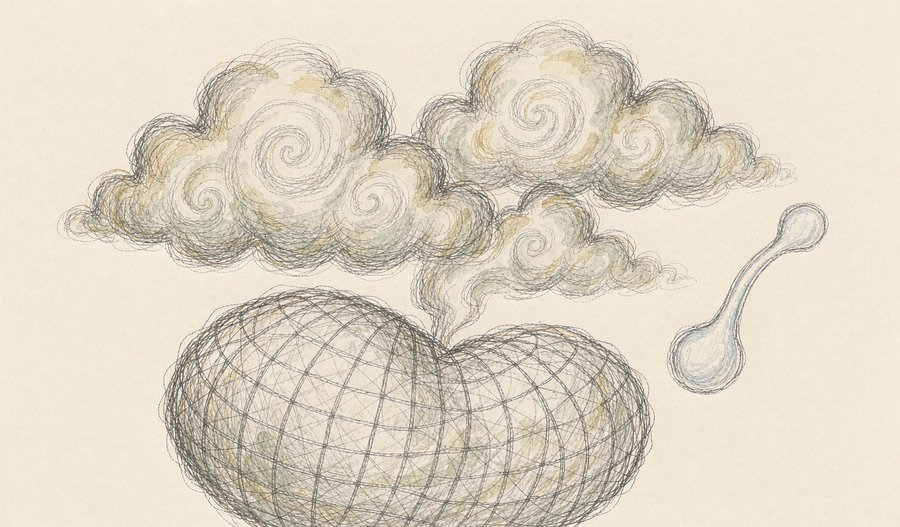
中国气象局与中科曙光联合宣布，自主研发的下一代天气—气候一体化模式实现全球5公里分辨率、未来10天预报在一小时内完成计算。该成果依托全国产的十万卡AI超算集群，完成了全模式的异构并行移植与全链路系统级优化。
观此：天气预报的价值与分辨率直接挂钩——5公里意味着能分辨出城市尺度的降水差异，而一小时的算力周期意味着一天之内可以做多次滚动更新。把数值模式整体搬到异构集群上并跑通，比单点性能提升更难。这件事的深层含义是，高性能计算与气象科学的耦合，正在从「算得动」走向「算得勤」。
来源：SegmentFault
09
我国在东部海域使用运载火箭，将一组极轨卫星与技术试验卫星共9颗送入预定轨道，发射任务取得圆满成功。这是该型火箭的第四次飞行，也是全球首次以海上机动方式完成低轨宽带互联网星座的组网发射。
观此：海上机动发射的核心优势不在「浪漫」，而在纬度与航路：船可以开到更接近赤道的海域，也能避开陆地人口密集区与固定航路。当低轨星座进入批量组网阶段，发射频率而不是单次载荷重量成为关键指标——谁能把发射变成流水线，谁就掌握了星座部署的节拍。
来源：今日头条
10
依托500米口径球面射电望远镜的观测数据，国家天文台团队发现一个新双中子星系统，轨道周期仅2.36小时，为已知系统中第二短；两颗星总质量约2.488倍太阳质量，刷新了人类已知双中子星的质量下限，其中伴星质量约1.19倍太阳质量，接近理论允许的极限。相关成果发表于《物理评论快报》并被列为重点推介。
观此：双中子星是目前已知仅约30例的稀有天体，它们既是引力波并合的源头，也是宇宙中金、铂等重元素的诞生地。轨道越短、间距越小，相对论效应就越显著，这颗系统因此成了检验引力理论的天然实验室。伴星质量逼近理论下限，则等于给超新星爆发机制提供了一条新的实测约束。
来源：中国新闻网
11
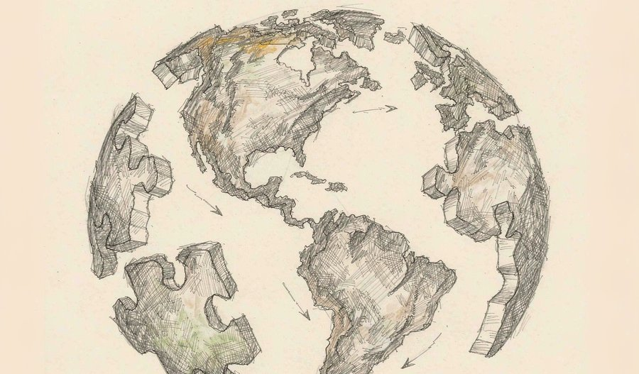
中外科学家团队利用覆盖亚洲、中欧、北美与澳洲的两万五千余条全岩钕同位素数据，发现在欧亚、北美与澳洲年轻造山带的深部埋藏着大量前寒武纪古老地壳碎片。把这些碎片重新拼合后，冈瓦纳大陆的面积从传统认定的约64%跃升至全球大陆地壳的80%，首次跨过超大陆门槛。成果发表于《科学进展》。
观此：同位素比值像一台时光机，即使岩石所在山脉只有两千万年历史，也能借此识别出五亿年前的古老地块。这项研究真正的突破在方法：团队与实验室合作，用智能化技术从旧文献中提取样品经纬度，把原本缺失空间坐标的老数据重新激活。科学发现有时并不需要新样本，只需要把旧数据重新排列组合。
来源：科技日报
12
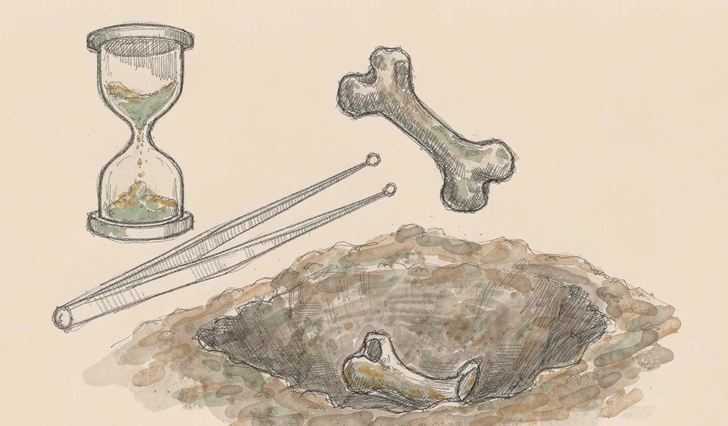
一项覆盖加勒比地区33处考古地点、318份人骨与牙齿样本的系统评估给出了明确结论：这里的古DNA衰减速度约为温带北美的四倍、亚极地格陵兰与阿拉斯加的十四倍。研究推算，超过约五千年的遗骸要提取可用DNA将极为困难。该研究还发现，容纳内耳的致密岩骨所含人类DNA比例远高于牙齿与肋骨等部位。
观此：每一份古DNA结果都始于一个决定——毁掉样本的一部分。这项研究的价值在于把「值不值得破坏」变成了一道可以计算的问题：知道哪块骨头最可靠、多老的样本基本无望，才能把有限样本用在刀刃上。它同时提醒我们，考古证据的可得性本身受气候支配，热带地区的人类迁徙史注定更难被书写。
来源：ScienceBlog
13
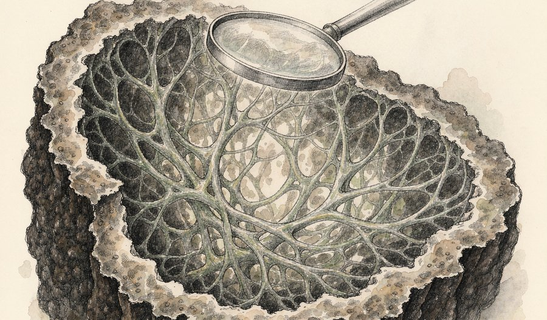
一支多机构研究团队在一块出土于南达科他州、重约22公斤的鸭嘴龙骶骨中，检测到了降解的胶原蛋白片段。研究者结合蛋白质测序、多重质谱与高分辨显微技术，并在骨基质深处识别出羟脯氨酸这一胶原特有的标志物，从而排除了现代污染的可能。相关成果发表于《分析化学》。
观此：长期以来的教科书说法是：化石就是石头，原始有机分子早已被矿物完全替换。这项研究用多重手段交叉验证给出了相反的证据，也把「软组织结构发现」这类长期受质疑的结论重新拉回讨论桌。如果蛋白质能在矿物基质里留存数千万年，那么部分化石就不再只是形状的模具，而是可以读取的分子档案。
来源：Ornithophile
14
一项小鼠研究显示，致幻蘑菇中的活性成分裸盖菇素或能预防铂类化疗引发的神经病变。临床上多达六成接受铂类药物治疗的患者会出现手脚持续灼烧或针刺感，而研究者在化疗前仅给予两剂该成分，就完全阻断了这一反应。相关论文发表于《科学》。
观此：神经病变是很多患者被迫减量甚至中断治疗的原因，它不会致命，却极大影响生活质量。这项结果表明，这类精神活性物质的作用范围可能远不止精神疾病，其神经保护机制值得单独研究。从实验室到临床还有很长的路，但它至少指出了一条与止痛药完全不同的思路。
来源：腾讯新闻
15
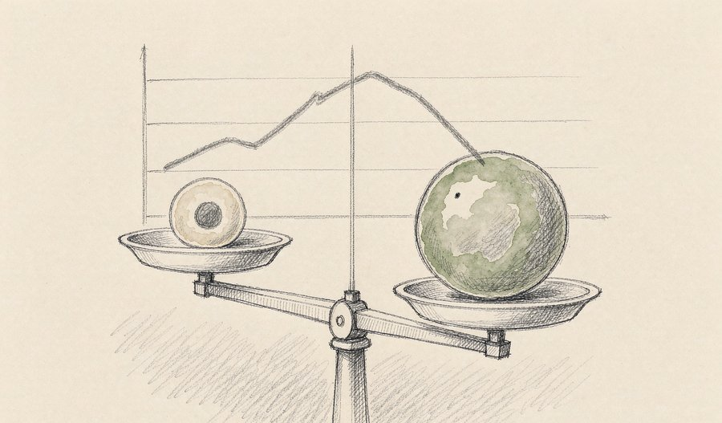
在国际肺癌大会上公布的三期研究最终总生存数据中，国产双特异性抗体用于一线治疗特定类型晚期肺癌，中位总生存期达到30.8个月，对照组为22.6个月，死亡风险降低约27%。此前该研究已实现无进展生存与总生存双终点阳性。
观此：与全球最主流的同类进口药物做头对头比较，并把总生存优势一直维持到随访终点，这在国产创新药中尚属首次。它的意义不在于单次数据的漂亮，而在于把「能不能与顶级对手正面比较」这个问题，从设想变成了可核查的事实。对后续所有国产创新药而言，这条路径被走通之后，门槛也随之提高。
来源：医科创联研究院
16
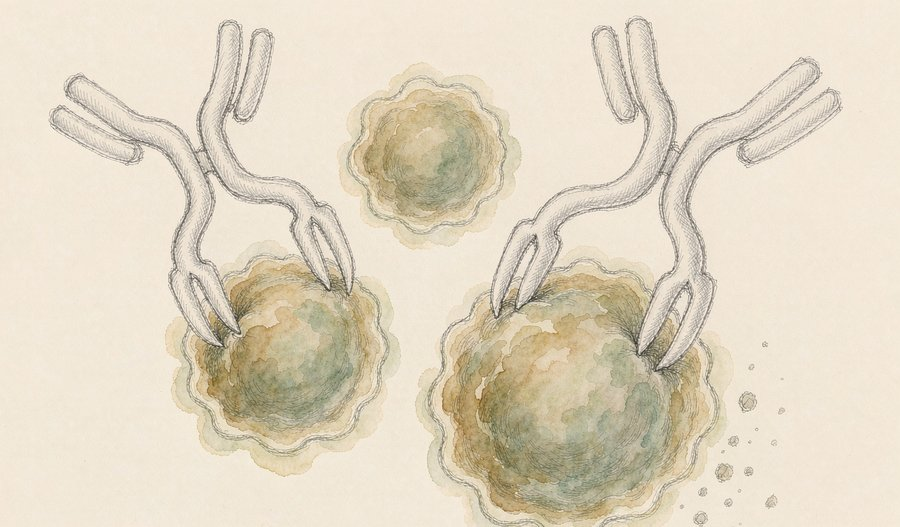
一项针对含铂化疗失败后复发小细胞肺癌患者的三期研究公布结果：试验药物组中位总生存期18.5个月，化疗组10.3个月，死亡风险降低约54%，研究同日在《新英格兰医学杂志》发表，其上市申请此前已获受理并纳入优先审评。
观此：小细胞肺癌的二线治疗十多年来几乎没有像样进展，患者可选项极其有限。数据、顶刊、审评受理在三天内接连落地，说明这一类药物已经跨过「数据好看」的阶段，进入改变生存结局的验证期。它也提示，真正稀缺的不是新靶点，而是能把新靶点做成可重复疗效的工程能力。
来源：医科创联研究院
17
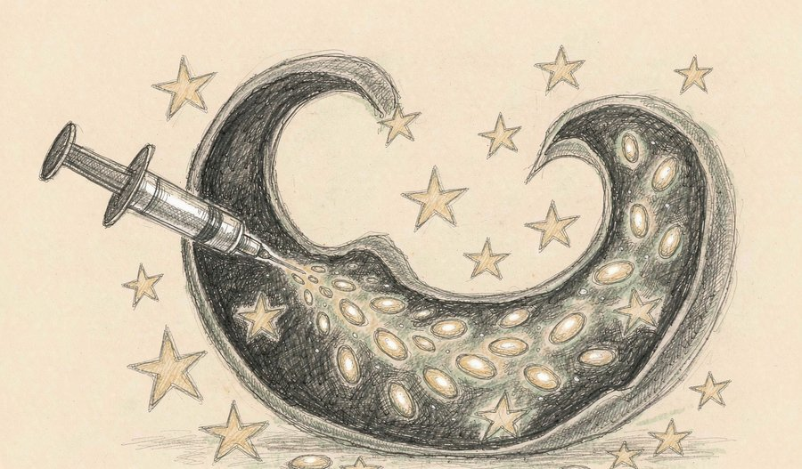
一款靶向特定免疫标记的体内制备型免疫细胞产品，其新药临床试验申请获美国食品药品监督管理局默示许可，成为国内首个获此许可的慢病毒载体体内细胞治疗产品。该产品基于国内研究者发起的临床数据直接进入Ib期研究，患者无需经过细胞单采与清淋处理，仅接受单次静脉给药。
观此：常规细胞治疗需要把患者的细胞取出、在实验室内改造、再回输，流程长、成本高、可及性差。把改造指令直接送进体内，等于把「生产车间」搬到了患者身体里。这一路线若能走通，最大的受益者不是最先进的医院，而是那些没有细胞制备能力的地方。
来源：上观新闻
18
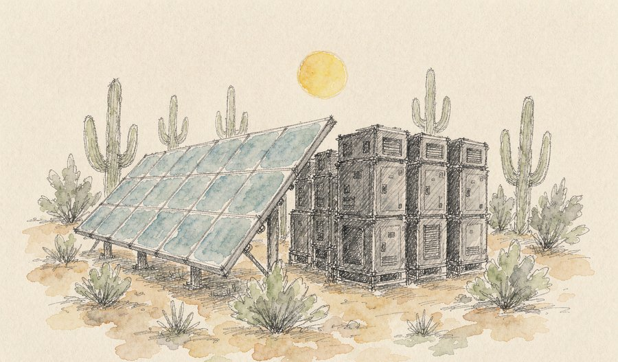
摩洛哥首个大型磷酸铁锂储能系统在本盖里尔矿区正式并网，规模为25兆瓦/125兆瓦时，配套当地202兆瓦光伏项目，核心设备由中国企业提供。系统形成「光伏发电—储能调节—工业消纳」闭环，每天一充一放，预计可帮助矿区削减约25%的高峰电费。
观此：光伏的短板从来不是发电，而是发电的时机与用电的时机对不上。储能把白天的盈余挪到高峰，收益是实打实的电费差额，这让可再生能源在工业场景里第一次具备了纯粹的账本说服力。它的示范意义在于，绿色转型的推进力有时来自成本，而不只是来自理念。
来源：环球网
19
截至9月15日，2026年度电影总票房含预售突破290亿元，总观影人次达7.37亿，放映总场次约1.06亿场。三项数据共同勾勒出这一年院线市场的规模轮廓。
观此：人次与场次的比例关系往往比总票房更有信息量——它反映的是观众是否愿意为「走进影院」这件事付出时间，而不仅是票价在推动数字上涨。当放映场次创下高位而单片号召力分散时，行业真正需要回答的问题是：什么样的内容还能让人愿意专程出门。
来源：央视新闻
20
名古屋亚运会男足小组赛第一轮于16日18时开球，中国队在刈谷体育场迎战朝鲜队，比赛由央视体育频道直播。同一时段，国家乒乓球队本届亚运会的各参赛项目名单也已公布。
观此：综合性运动会的小组首战，往往同时承担两种功能：争分，以及给年轻阵容一次高强度实战检验。相比结果，这类比赛更值得看的是球队在压力下的组织方式与调整能力。而对观众来说，赛程本身也是理解一支队伍成长阶段的窗口。
来源：央视新闻
把今天这二十条收在一起，格局大致可以这样描述：上游在重构结构，中游在重定义形态，下游在重读旧证据。
上游的算力与芯片产业，正在同时做三件事——把制程推到2纳米后转向架构创新，把机房从平面改为立体以缩短交付周期，把量子计算的开发工具链补上以搬走路障。当单一维度的物理空间收窄，工程智慧就必然转向组织方式的设计，这是今天硬件侧最清晰的共同动作。
中游的终端与模型层，则出现了形态上的分岔：模型被拆成「快响应」与「深思考」两条产品线，设备被重新定义为能跨应用办成事的「代理」，而机器人把升级点放在了扭矩这类最朴素的指标上。评价标准也随之更换——从「像不像人」转向「事情办没办成」。与之相伴的是行业内罕见地同时强调能力扩张与边界治理，这种张力会长期存在。
下游的科学发现呈现出第三种姿态：不制造新证据，而是把旧材料重新组织、重新提问。用同位素指纹拼回失落大陆，用旧文献里的坐标激活沉睡数据，用多重手段为一块恐龙骨头翻案。这些工作提醒我们，增量有时并不来自更先进的仪器，而来自更聪明的问题设定。
三条线合起来，是今天最值得记住的一句话：当显性资源接近天花板，真正的空间在结构、边界与重新读取里。
内容仅供资讯参考，不构成任何建议。
本期插画由 AI 辅助绘制，文字为编辑原创整合与解读。
本文插画由 AI 辅助绘制。